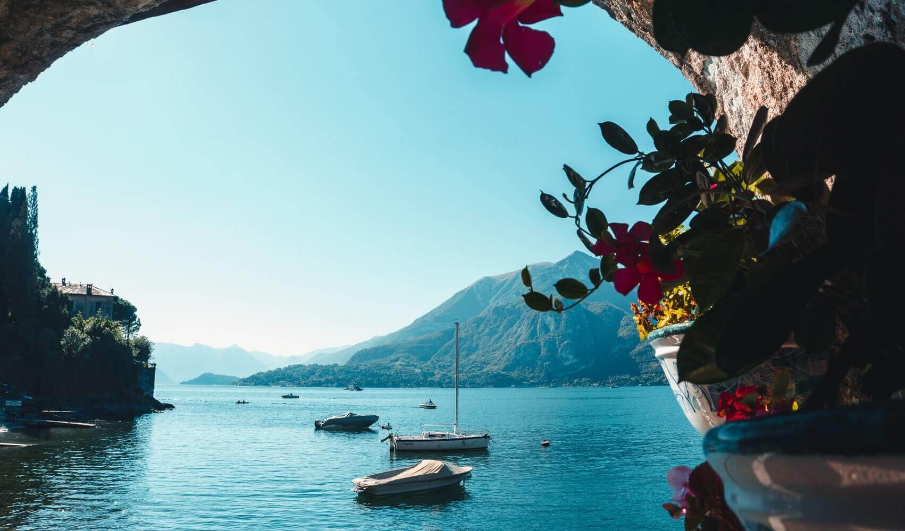
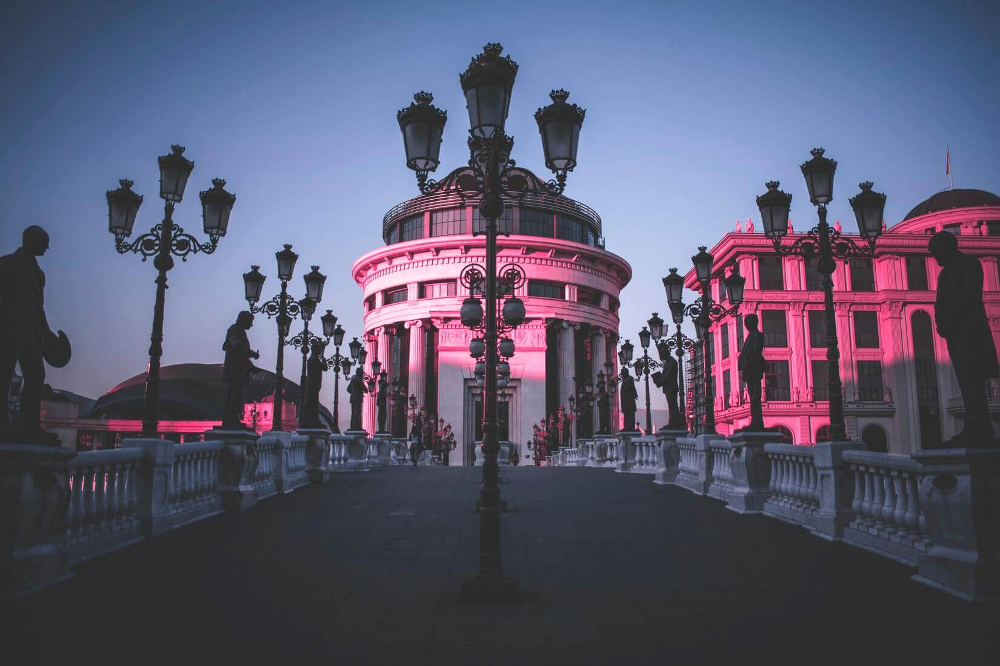

Блог
E. Egina | 25/02/2020
Говорят, на озере Комо отдыхают только богатые немецкие пенсионеры, сутки в отеле выходят по цене авиаперелёта, а где-то по периметру можно найти виллы Джорджа Клуни и Брэда Питта. Мы собрали эти и другие страшилки про легендарное озеро и разобрались, стоит ли пугаться заранее. Хотя остаться среди вилл голливудских красавцев было бы не так и ужасно.
Читать далееE. Nechitailo | 24/02/2020
Начало января 2020 года. Доедены салаты, высушены мандариновые корочки, допито всё, что можно было допить. По Белграду носятся лишь собаки в поисках еды, машины, чьи водители давно забили на правила дорожного движения, автобусы, что похожи на караваны. Сербская столица утопает в тумане: одни называют это мглой, другие — смогом, третьи — дымом от балканских сигарет. А мы уже 12 часов пытаемся вылететь в Северную Македонию, до которой всего 450 километров.
Читать далее